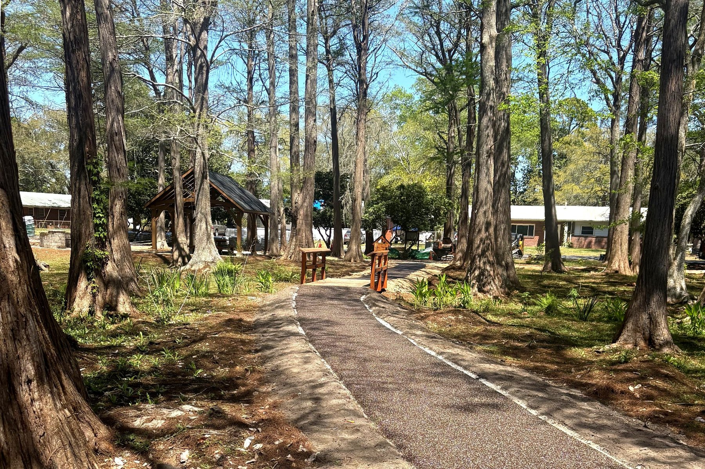
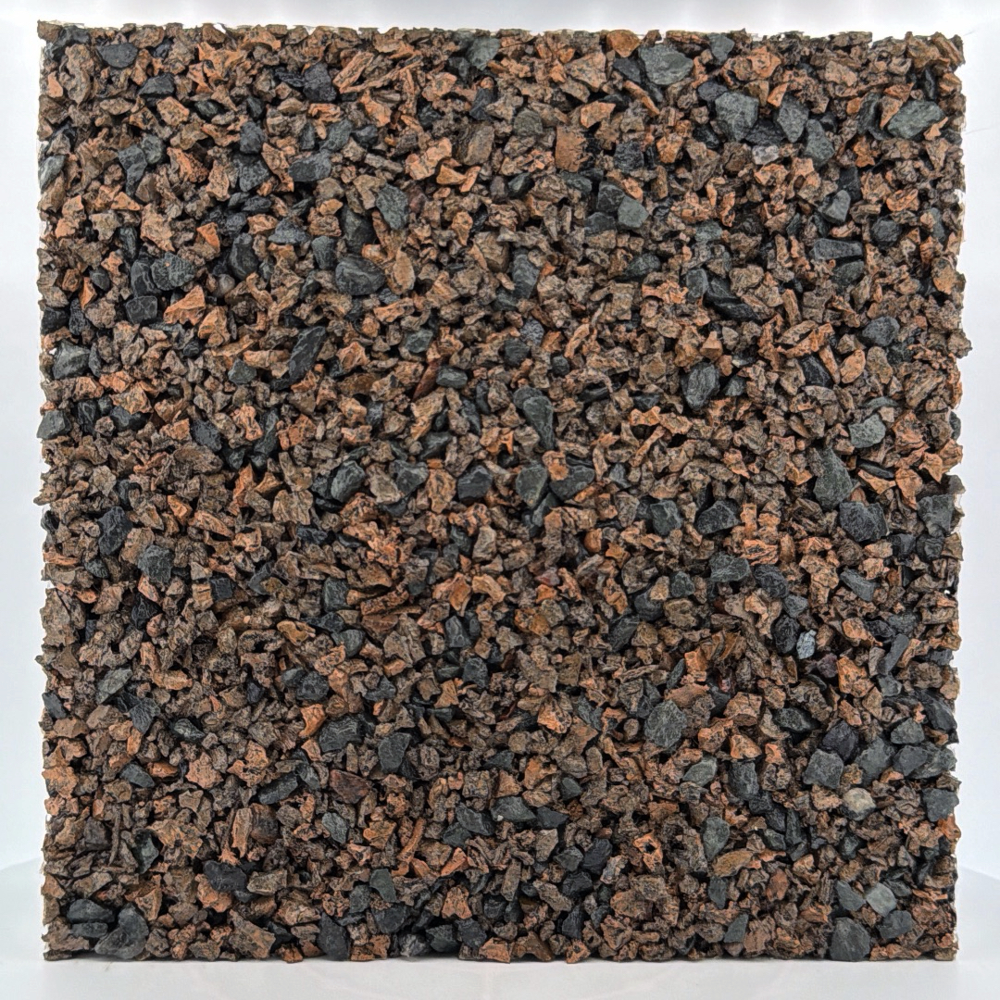
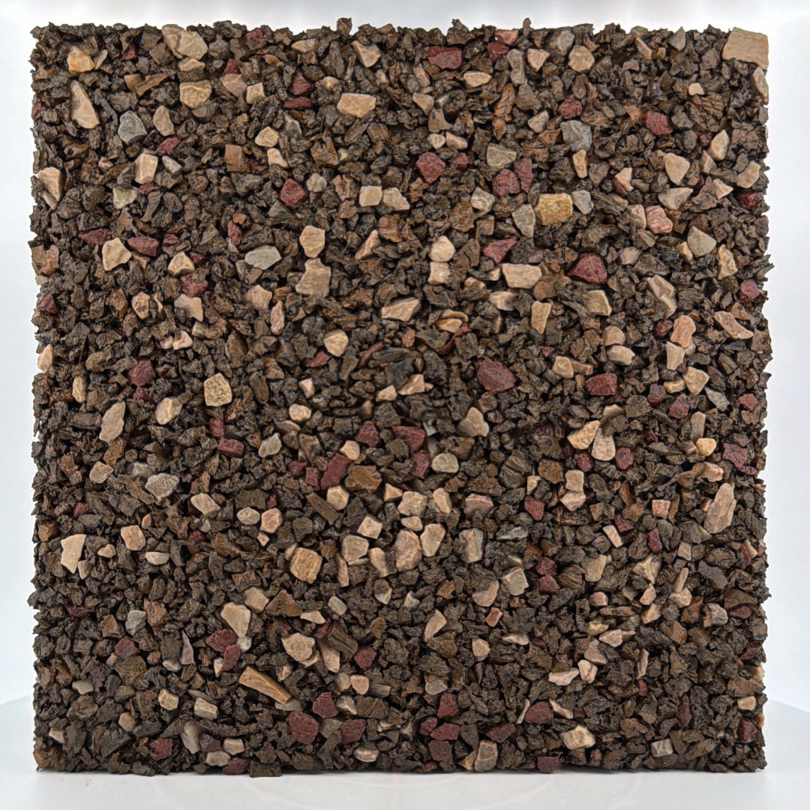
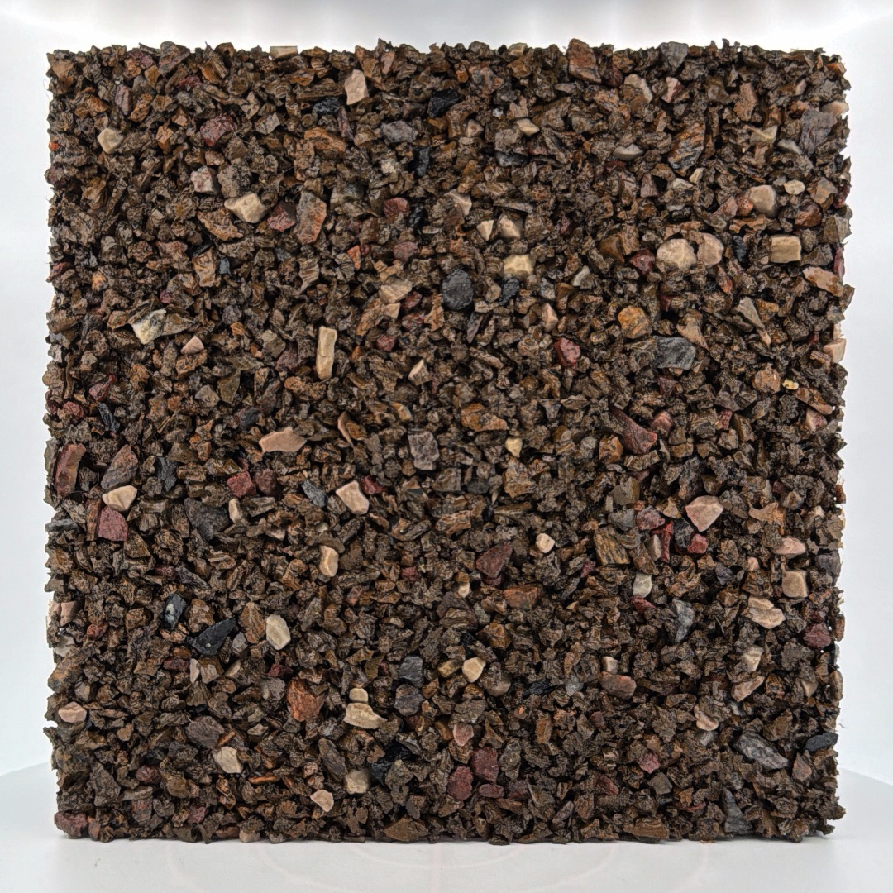
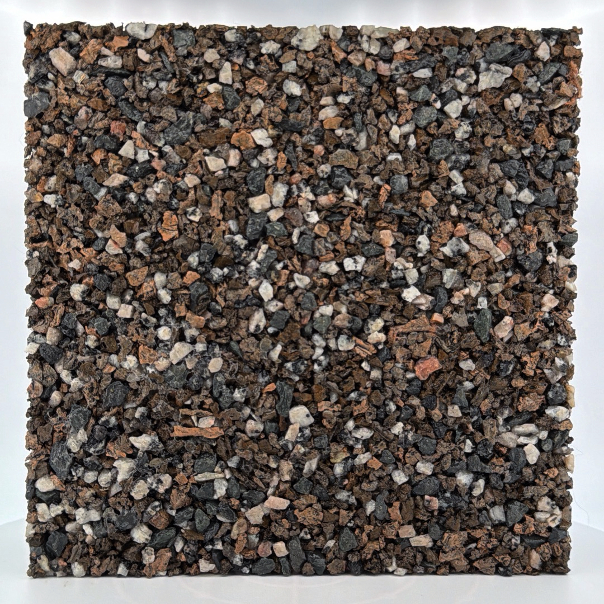

Architectural permeable pavement for landscape architecture
Architectural permeable pavement for campuses, botanical gardens, and design-led routes. Four curated aggregate blends. Same engineered system as CP — refined palette.
Best fit
- Campuses and civic institutions
- Botanical gardens and curated landscapes
- Design-led pedestrian routes
- Stone-forward aesthetics with controlled palette
What you specify

AP-200 — In the field
2.0″ of stone-forward composite placed seamlessly through an established canopy. Fully permeable from day one. One pour, no joints, no migration.
Request AP-200 sample →Aggregate palette
Four blends, each with a specific design intent. Request samples to evaluate against your project materials.




Samples are representative. Final appearance varies slightly with natural aggregate and field placement. Surface finish is intentionally matte and stone-forward.
Choosing a blend
When in doubt, request samples of your top two candidates and evaluate against project material boards and site photos. Aggregate color shifts meaningfully between dry and wet conditions.
Lift selection guide
Choose based on route type and traffic, not just budget.
- Secondary or low-frequency route
- Substrate well-prepared and stable
- No service vehicles will ever cross
- Primary pedestrian connector
- Moderate to high foot traffic
- Peer or client review required
- Primary campus or civic spine
- Variable base conditions across the project
- Durability outweighs incremental cost
Lift thickness does not substitute for base preparation. All three lifts require a properly graded and compacted open-graded aggregate base. Base depth is specified per project based on soil conditions. See installation guidelines for details.
Both series use the same tested system architecture, the same binder, and the same lift options. The difference is aggregate intent — standardized neutral blends (CP) vs. curated design selections (AP). See CP series →
Specifier FAQ
-
AP runs $18–$26/sf fully installed — cost-competitive with concrete ($18–$28/sf) and below pavers and PICP ($20–$35/sf). The relevant comparison for AP is usually against pavers or resin-bound systems, where AP competes well on lifecycle cost. Build a line-item estimate →
-
Yes — this is a primary use case. Flexus is poured in place and requires no compaction, so it can be placed up to the root zone without compaction damage. Root barriers and clearances should follow arborist recommendations. See installation guidelines for base prep near established trees.
-
24–48 hours under normal conditions; full cure for sustained load at 72 hours. No pour below 40°F or with rain forecast within 24 hours.
-
Hard restraint at all perimeter conditions — concrete curb, metal edging, or existing structure. Rolled or beveled edge available where hard restraint isn't possible. Cross-slope must not exceed 2%. Details in the spec pack cross-sections.
-
Yes — saw-cut, remove, and repour. The patch seam will be visible. Aggregate blends are maintained for consistency. Discuss patch protocol with the installer before closeout.
-
Yes. Firm, stable, slip-tested per ASTM E303. Field compliance — cross-slope, running slope, continuity — is the responsibility of the specifier and contractor.
-
15–20 years in properly installed pedestrian applications. Surface lightening is expected over time — structural performance and permeability hold. Based on binder data, ASTM G154 testing, and 20+ years of field history in this material category.
-
Running slopes up to ~8% (1:12), cross-slopes up to 2%. Above 5%, consult us before specifying — base depth and drainage configuration may need adjustment. Not appropriate for steps, ramps, or vehicular applications.
-
Yes. Division 32 spec language, editable for lift, blend, and edge conditions. Included in the spec pack with product overview, installation guidelines, cross-sections, and ASTM reports. Download spec pack →